Lecture 15
贝叶斯因子分析
Hu Chuan-Peng
2023-12-19
本次课内容
为什么要学习/使用贝叶斯因子
贝叶斯因子是什么
常见BF分析：t-test, ANOVA, multinomial
贝叶斯分析的流程
回顾
Bootstrap
Simulation
参数恢复
模型恢复
Bootstrap

参数恢复

模型恢复(Model recovery)
 # Part 1: 为什么要学习/使用贝叶斯因子
# Part 1: 为什么要学习/使用贝叶斯因子
科学心理学研究要解决的问题
描述
解释
预测
干预
科学心理学研究要解决的问题
描述
解释
预测
干预
科学心理学最常用的数据分析方法
- Null Hypothesis Significance Test (NHST)
40 papers in 10 leading Psych Journals
1998, 97.8%
2003 ~ 2004, 97.7%
2005 ~ 2006, 96.9%
40 papers in 10 leading Psych Journals
1998, 97.8%
2003 ~ 2004, 97.7%
2005 ~ 2006, 96.9%
The “null ritual”
Set up a null hypothesis of “no mean difference” or “zero correlation.” Do not specify the predictions of your own research hypothesis.
Use 5% as a convention for rejecting the null hypothesis. If the test is significant, accept your research hypothesis. Report the test result as p < .05, p < .01, or p < .001, whichever level is met by the obtained p value.
Always perform this procedure.
NHST的预设(assumptions)
（1）分布从哪儿来？基于H0 的（效应量为0）
（2）分布的形态受到预设的影响大
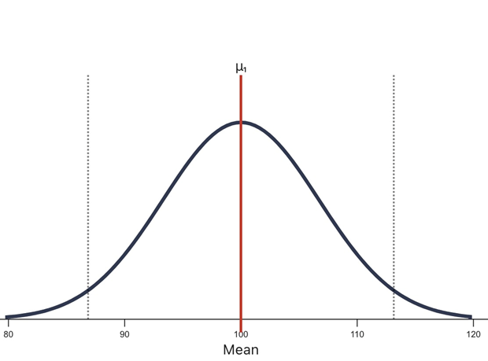 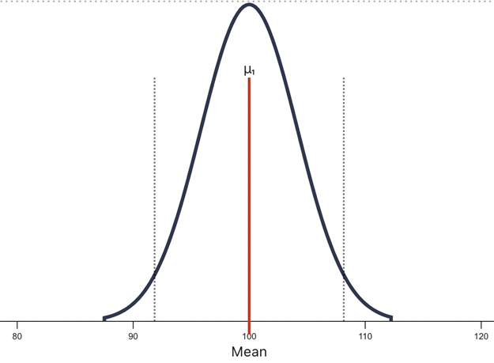
NHST的问题
（1）假设的设定仅考虑 H0 忽视了 H1
（2）无法用来支持 H0
（3）“严重”地倾向于反对 H0
（4）难以监控证据强度的变化
（5）受抽样计划的影响。
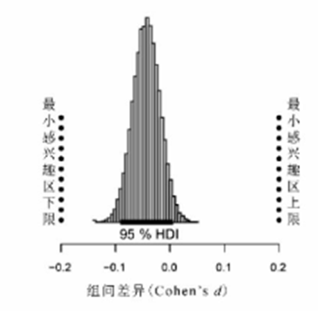
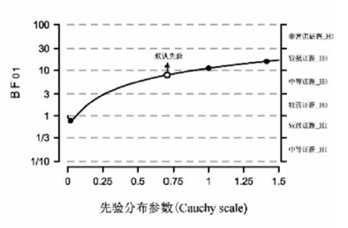
假如我们计划收集50人的数据，准备在10人、20人、30人、40人和50人时各分析一次，一旦 p < .05 显著了就停止收集数据。
后果：在没有效应的数据中，我们也能观测到 < 5%的阳性结果
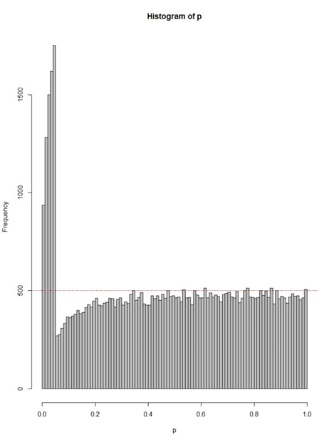“无脑”地使用NHST，忽视了NHST的不足。
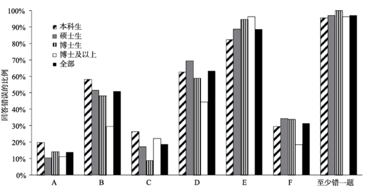为什么要学习/使用贝叶斯因子
“无脑”地使用NHST，忽视了NHST的不足。
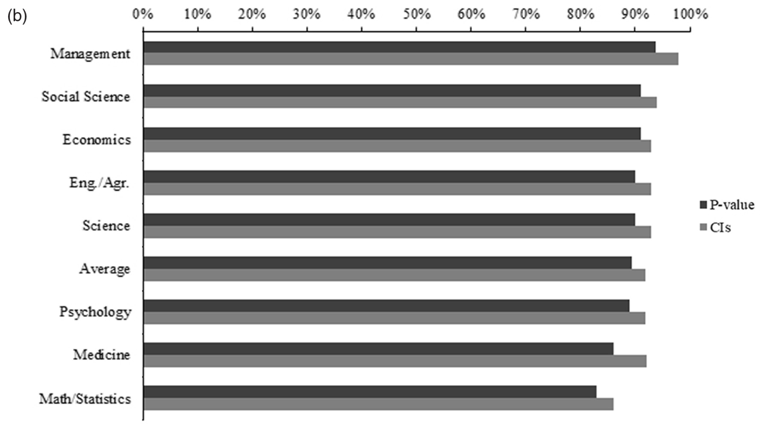为什么要学习/使用贝叶斯因子
（1）NHST方法的局限性；
（2）计算机算力的大大进步.
（3）软件的普及.
为什么要学习/使用贝叶斯因子
（1）NHST方法的局限性；
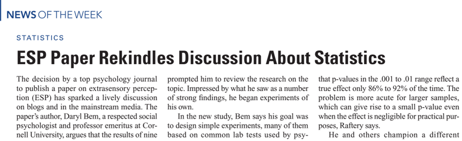为什么要学习/使用贝叶斯因子
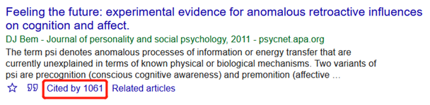
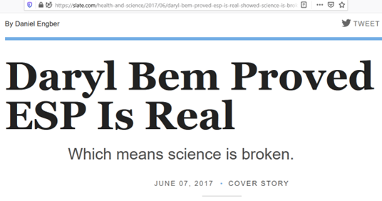
为什么要学习/使用贝叶斯因子
（1）可重复性问题的推动；
（2）计算机算力的大大进步.
（3）软件的普及.
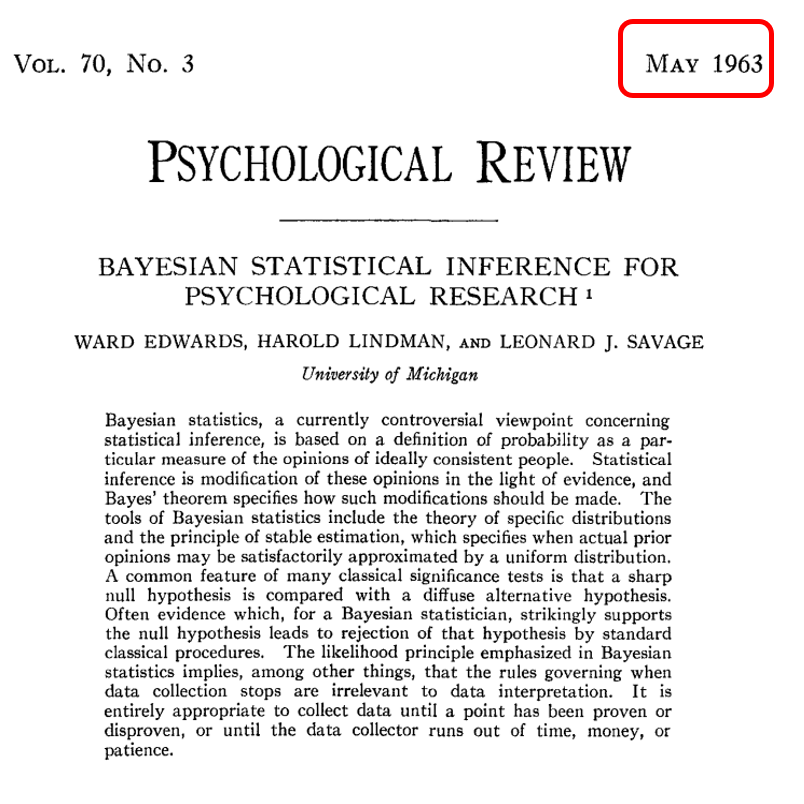为什么要学习/使用贝叶斯因子
贝叶斯因子的优势
（1）同时考虑 H0 和 H1
（2）可用来支持 H0
（3）并未“严重”地倾向于反对 H0
（4）可以监控证据强度的变化
（5）受抽样计划的影响较小。
为什么贝叶斯因子没有在心理学中广泛使用？ 理论上：贝叶斯因子依赖于先验分布，具有相对的主观性； 实践上：贝叶斯分析依赖于后验分布，其计算复杂。
最近的发展： 理论上：默认先验分布的实证 实践上：计算机的普及让贝叶斯分析变得简单
Part 2: 贝叶斯因子是什么
概率中的加法原则和乘法原则
两个相互独立的事件A和B，它们同时发生的概率
\[p(A \cap B) = p(A|B)*p(B)=p(B|A)*p(A)\] 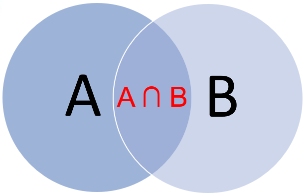
概率中的加法原则和乘法原则
两个相互独立的事件A和B，它们同时发生的概率
\[p(A \cap B) = p(A|B)*p(B)=p(B|A)*p(A)\] \[\rightarrow p(A|B)=\frac{p(B|A)*p(A)}{p(B)}(Bayes' Rule)\]
概率中的加法原则和乘法原则
两个相互独立的事件A和B，它们同时发生的概率
\[p(A \cap B) = p(A|B)*p(B)=p(B|A)*p(A)\]
\[\rightarrow p(A|B)=\frac{p(B|A)*p(A)}{p(B)}(Bayes' Rule)\]
假如：
\(A \rightarrow 理论模型\)
\(B \rightarrow 数据集\)
则：
\(p(A|B) \rightarrow 收集到数据B之后理论模型A为真的概率\)
贝叶斯定理
\(M \rightarrow 理论模型, data \rightarrow 数据,\)
\[p(M|data) = \frac{p(data|M)*p(M)}{p(data)}\]
\(p(M):\)先验概率（先验分布）(prior)
\(p(data|M):\)假设为真时出现当前数据的概率(Likelihood)
\(p(data):\)所有可能模型下出现该数据的概率之和(归一化因子，normalizing factor)
\(p(M|data):\)当前数据为前提时，模型为真的概率，后验(posterior)
假如我们有两个相互竞争的模型：H0， H1
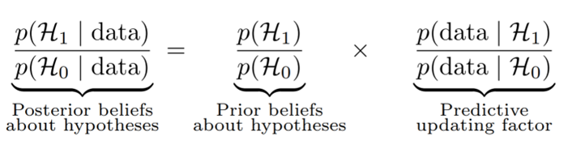假如我们有两个相互竞争的模型：H0， H1
 ##
##
两个不同的Priors
Prior distribution: 模型参数的先验分布，即存在于H0，也存在于H1；
Prior odds: 模型的先验比例，两个模型的先验比例只有一个。
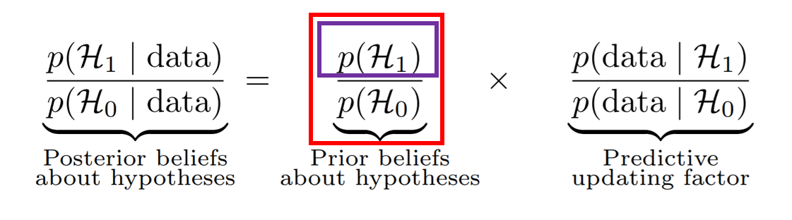
贝叶斯因子
\[BF_{10}=\frac{p(data|H_{1})}{p(data|H_{0})}\]
贝叶斯统计中模型比较的方法在假设检验上的应用
优势：
（1）: 符合直觉（vs. p-value)
（2）：能够支持（vs. p < 0.05)
（3）：不会100%拒绝H0 （vs. 增加N不必然带来\(BF_{10}\)的增加）
（4）：不受抽样动机的影响（vs. NHST） Kruschke (2011), p588
贝叶斯因子的两种解读：
(1)：数据对先验比值(prior odds)的更新
(2)：两种模型下似然性的比例，即数据更可能出现在哪个模型之下的比例。
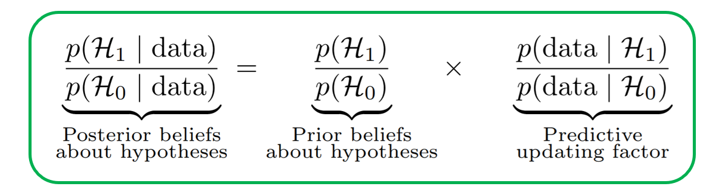贝叶斯因子 \(\ne\) 后验比例
贝叶斯因子的计算
实际BF的计算中，根据模型的不同，BF的计算会变得更加复杂
Savage-Dickey ratio
\(BF_{01}=\frac{p(y|M_{0})}{p(y|M_{1})}=\frac{p(y|\theta=\theta_{0},M_{0})}{p(y|M_{1})}\)

贝叶斯因子的计算
实际BF的计算中，根据模型的不同，BF的计算会变得更加复杂
Savage-Dickey ratio
\(BF_{01}=\frac{p(y|M_{0})}{p(y|M_{1})}=\frac{p(y|\theta=\theta_{0},M_{1})}{p(y|M_{1})}\)
先验的选择对贝叶斯因子影响较大
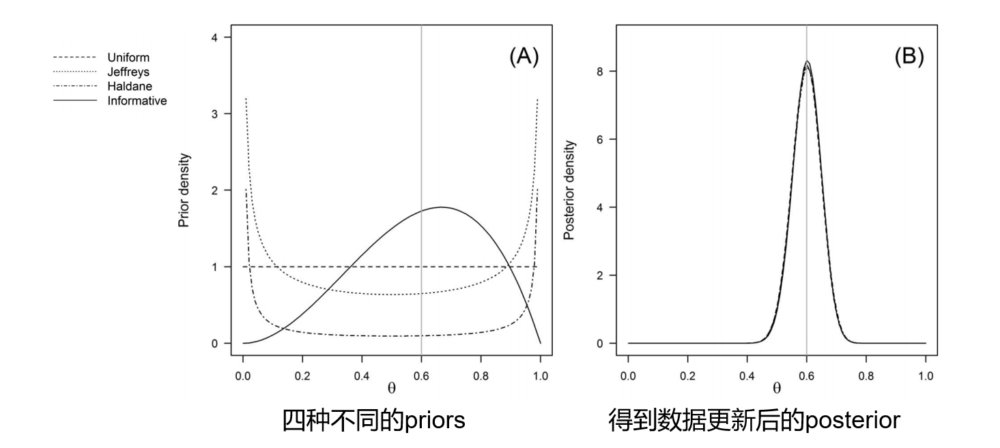先验的选择对贝叶斯因子影响较大
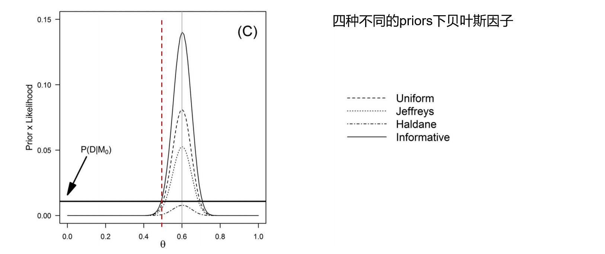先验的选择对贝叶斯因子影响较大
JASP等软件内置的先验：Jeffreys, Cauchy (0, \(\gamma\) = 0.707)
先前研究（直接重复实验）
专家经验 （Oosterwijk Lab’s prior; ego-depletion;）
整个领域总体知识：Wetzels et al. (2011), 593 t-test
Part 3: 常见的BF分析
t-test
ANOVA
Multinomial test
t-test
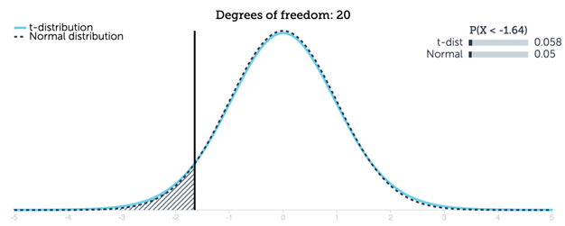\(H_{0}:\mu = 0\)
\(H_{1}:\mu \ne 0\)
模型：t-分布；
参数: location parameter
\(H_{0}:\mu = 0 \rightarrow p(x=0|M_{0})\)
\(H_{1}:\mu \ne 0 \rightarrow p(x=0|M_{1})\)
\(BF_{01}=\frac{p(x=0|Dist_{post})}{p(x=0|Dist_{prior})}\)
示例
利用配对样本t检验检验stroop范式下congruent组与incongruent组间是否存在反应时差异。
# 读取数据
df <- read.csv('data/example10_2.csv')
group1 <- as.vector(df$congruent)
group2 <- as.vector(df$incongruent)
# 执行贝叶斯t检验
result <- ttestBF(x = group1,
y = group2,
paired=TRUE) # 是否配对样本
resultBayes factor analysis
--------------
[1] Alt., r=0.707 : 70403231 ±0%
Against denominator:
Null, mu = 0
---
Bayes factor type: BFoneSample, JZSANOVA
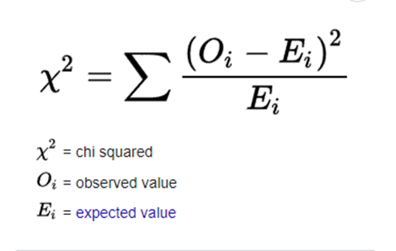 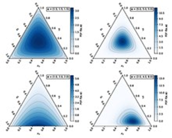
\(H_{0}: O \in Dir(\alpha), \alpha=E\)
\(H_{0}: O \notin Dir(\alpha), \alpha \ne E\)
\(BF_{01}=\frac{p(\alpha=E|Dir_{post})}{p(\alpha=E|Dir_{prior})}\)
问题: ANOVA中不止有一个效应
Repeated measure ANOVA
节肢甲虫的可怕程度与恶心程度对人们敌意的影响 （Ryan et al., 2013）
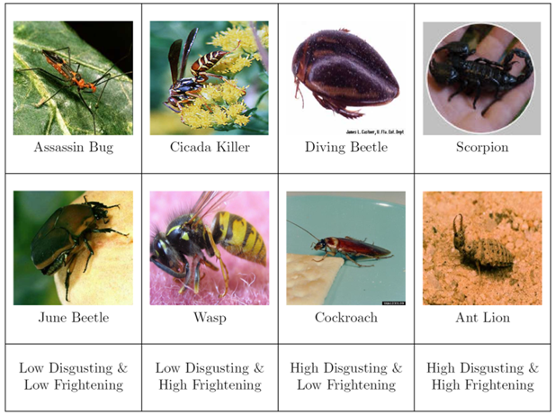问题: ANOVA中不止有一个效应
解决方案：使用线性模型
ANOVA中的效应
（1）A因素的处理效应是否为0
（2）B因素的处理效应是否为0
（3）AB的交互作用是否为0
方差分析
| 变异来源 | 平方和 | 自由度 | 均方 | F |
| 组间变异 | SS组间 | pq-1 | ||
| SSA | p-1 | MSA=SSA/p-1 | MSA/MS组内 | |
| SSB | q-1 | MSB=SSB/q-1 | MSB/MS组内 | |
| SSAB | (p-1)(q-1) | MSAB=SSAB/(p-1)(q-1) | MSAB/MS组内 | |
| 组内变异 | SS组内 | pq(n-1) | MS组内=SS组内/pq(n-1) | |
| 总和 | SS总变异 | npq-1 |
线性模型表达：
\(y = \beta_{0}+\beta_{1}*X_{1}+\beta_{2}*X_{2}+\beta_{3}*X_{3}+\beta_{4}*X_{4}+\beta_{5}*X_{5}\)
| A因素(组间) | x1 |
|---|---|
| A1 | 0 |
| A2 | 1 |
| B因素(组间) | x2 | x3 |
|---|---|---|
| B1 | 0 | 0 |
| B2 | 1 | 0 |
| B3 | 0 | 1 |
\(y = \beta_{0}+\beta_{1}*X_{1}+\beta_{2}*X_{2}+\beta_{3}*X_{3}+\beta_{4}*X_{4}+\beta_{5}*X_{5}\)
\(H_{0}: \beta_{1}=\beta_{2}=\beta_{3}=\beta_{4}=\beta_{5}=0\)
那么计算A存在效应的线性模型可写成:
\(H_{1}: Y_{M_{1}}=\mu+\sigma(\theta_{1}*A_{1}+\theta_{2}*A_{2})+\epsilon\)
不包括A效应的零模型可写成:
\(H_{1}: Y_{M_{1}}=\mu+\epsilon\)
Two-sample T-test 转时针的方向影响人格的开放性？Topolinski & Sparenberg (2012) 实验设计：组间，单因素两水平（顺时针 v. 逆时针） 数据来源： Wagenmakers et al (2015）重复实验
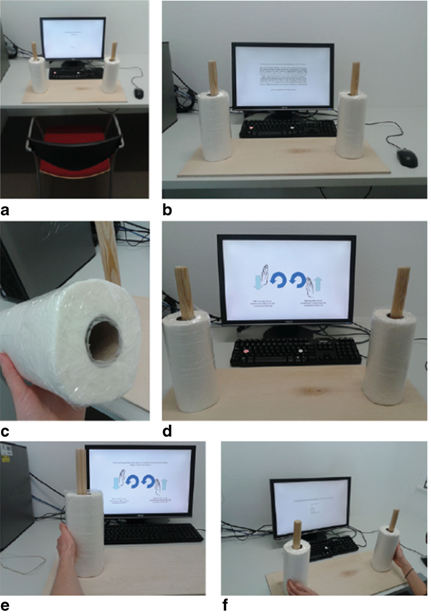Repeated measure ANOVA
节肢甲虫的可怕程度与恶心程度对人们敌意的影响 （Ryan et al., 2013）数据：example10_4_w.csv
用两因素重复测量方差分析探究一致性 (一致vs不一致)和刺激颜色(红vs蓝vs绿)对反应时的影响，两变量均为组内变量。
df <- read.csv('data/example10_4_w.csv')
# 宽数据转长数据
df.da.l <- df %>%
pivot_longer(cols = c("congruent_blue", "congruent_green", "congruent_red",
"incongruent_blue", "incongruent_green","incongruent_red"),
names_to = c("condition", "stim_color"),
names_sep = "_",
values_to = "rt")%>%
mutate(condition=factor(condition),
stim_color=factor(stim_color))
head(df.da.l)# A tibble: 6 × 4
worker_id condition stim_color rt
<chr> <fct> <fct> <dbl>
1 s004 congruent blue 681.
2 s004 congruent green 740
3 s004 congruent red 740.
4 s004 incongruent blue 750.
5 s004 incongruent green 837.
6 s004 incongruent red 830.Bayes factor analysis
--------------
[1] condition : 290190852796 ±0%
[2] stim_color : 1.032478 ±0.01%
[3] condition + stim_color : 912950910907 ±1.48%
[4] condition + stim_color + condition:stim_color : 103646545139 ±2.03%
Against denominator:
Intercept only
---
Bayes factor type: BFlinearModel, JZS报告BF结果
（1）方法的数据分析部分
为什么使用BF、计算工具、先验的选择（2）结果部分
BF值、robustness etc.（3）结果解读
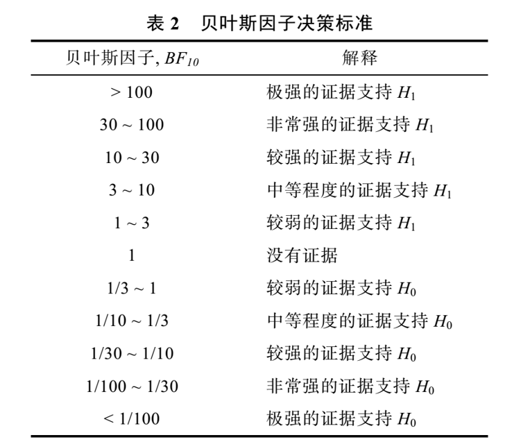Part 4: 贝叶斯分析流程
Planning the analysis
Executing the analysis
Interpreting the results
Reporting the results
Stage 1: Planning the analysis
Specifying the goal of the analysis
Specifying the statistical model
Specifying data preprocessing steps
Specifying the sampling plan
Stage 1: Planning the analysis
- Specifying the goal of the analysis: Presence of an effect vs. estimate the effect?
Stage 1: Planning the analysis
- Specifying the goal of the analysis: Presence of an effect vs. estimate the effect?
Stage 1: Planning the analysis
- Specifying the statistical model
The model is guided by the nature of the data and the research question, and determines which assumptions ought to be satisfied by the data;
The next step is to determine the sidedness of the procedure;
For hypothesis testing, you may conduct a one-sided procedure when necessary;
For parameter estimation, we recommend to always use the two-sided model.
Then concerns the type and spread of the prior distribution, including its justification.
Stage 1: Planning the analysis
- Specifying data preprocessing steps
when and how outliers may be identified and accounted for;
which variables are to be analyzed;
whether further transformation or combination of data are necessary.
Stage 1: Planning the analysis
- Specifying the sampling plan
There is no need to pre-specify sample size for Bayesian inference, because it allows researchers to monitor evidence as the continual updating of data;
If you do desire that, you can conduct the Bayes factor design analysis (Schönbrodt & Wagenmakers, 2018; Stefan, Gronau, Schönbrodt, & Wagenmakers, 2019; https://www.bilibili.com/video/BV1T7411U7KK?p=2 )
Stage 2: Executing the analysis
Check the validity of the model assumptions (e.g., normally distributed residuals or equal variances across groups);
Once the quality of the data has been confirmed, the planned analyses can be carried out (with JASP);
The output (the .jasp file) can be with or without the real data.
Check the validity of the model assumptions
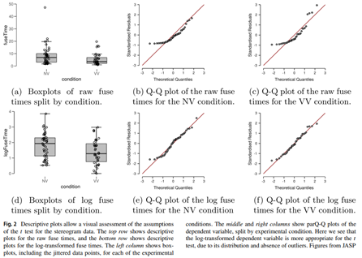Stage 3: Interpreting
Beware of the common pitfalls
Use the correct interpretation of Bayes factor and credible interval
When in doubt, ask for advice (e.g., on the JASP forum: http://forum.cogsci.nl)
Stage 3: Interpreting
Common pitfalls in interpreting Bayesian results:
The Bayes factor does not equal the posterior odds
Prior model probabilities (i.e., prior odds) and parameter prior distributions play different conceptual roles
The Bayes factor and credible interval have different purposes and can yield different conclusions
The strength of evidence in the data is easy to overstate
The results of an analysis always depend on the questions that were asked
Stage 3: Stereogram example
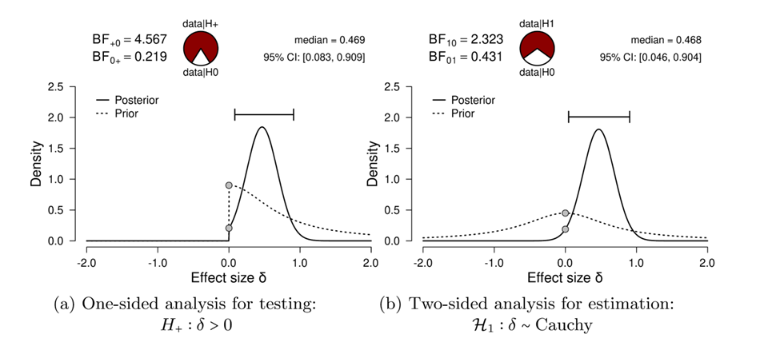Stage 4: reporting the results (Stereogram example)
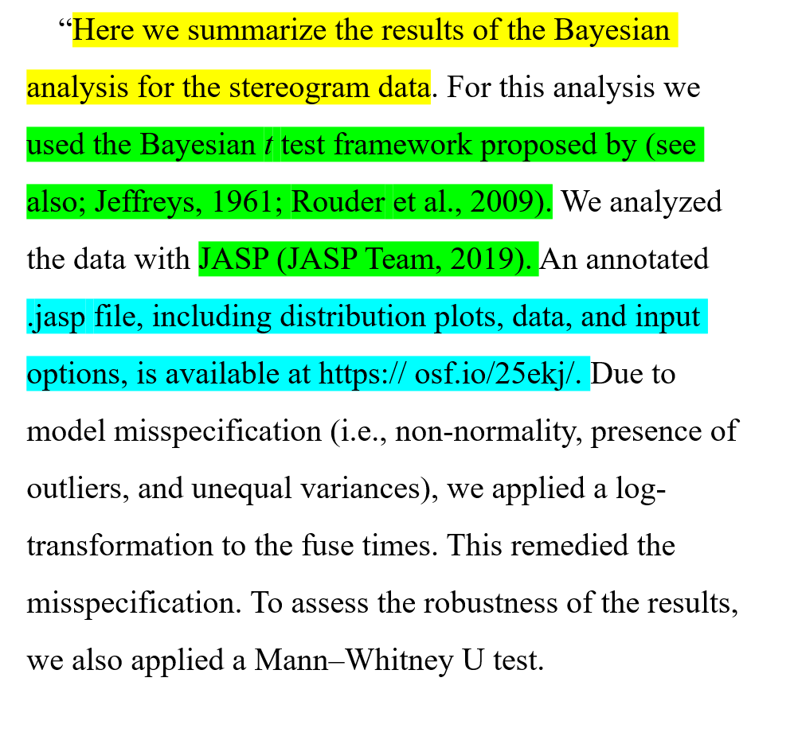Mention the goal of the analysis
Refer to the statistical literature for details about the analysis used
Make the analysis file and data available online
Include.a plot of the prior and posterior distribution, if available
Include which prior settings were used
Justify the prior settings (particularly for informed priors in a testings cenar1o)
If testing, report the Bayes factor,including its subscripts
Discuss the robustness of the result
Report the results of any multiverse analyses, if conducted
If relevant, report the results from both estimation and hypothesis testing
If estimating report the posterior median and x% credible interval
Four stages of Bayesian analysis
Planning the analysis
Executing the analysis
Interpreting the results
Reporting the results
Reference:
Heck, D. W., Boehm, U., Böing-Messing, F., Bürkner, P.-C., Derks, K., Dienes, Z., … Hoijtink, H. (2022). A review of applications of the bayes factor in psychological research. Psychological Methods. https://doi.org/10.1037/met0000454
Tendeiro, J. N., & Kiers, H. A. L. (2019). A review of issues about null hypothesis Bayesian testing. Psychological Methods, 24(6), 774-795. doi:10.1037/met0000221

不要迷信文献，批判地看待已发表的论文
p值的误解 \(\rightarrow\) 不要把统计分析作为现代科研的“仪式”
贝叶斯因子/p-value/effect size \(\rightarrow\) 选择适合自己研究目的的方法
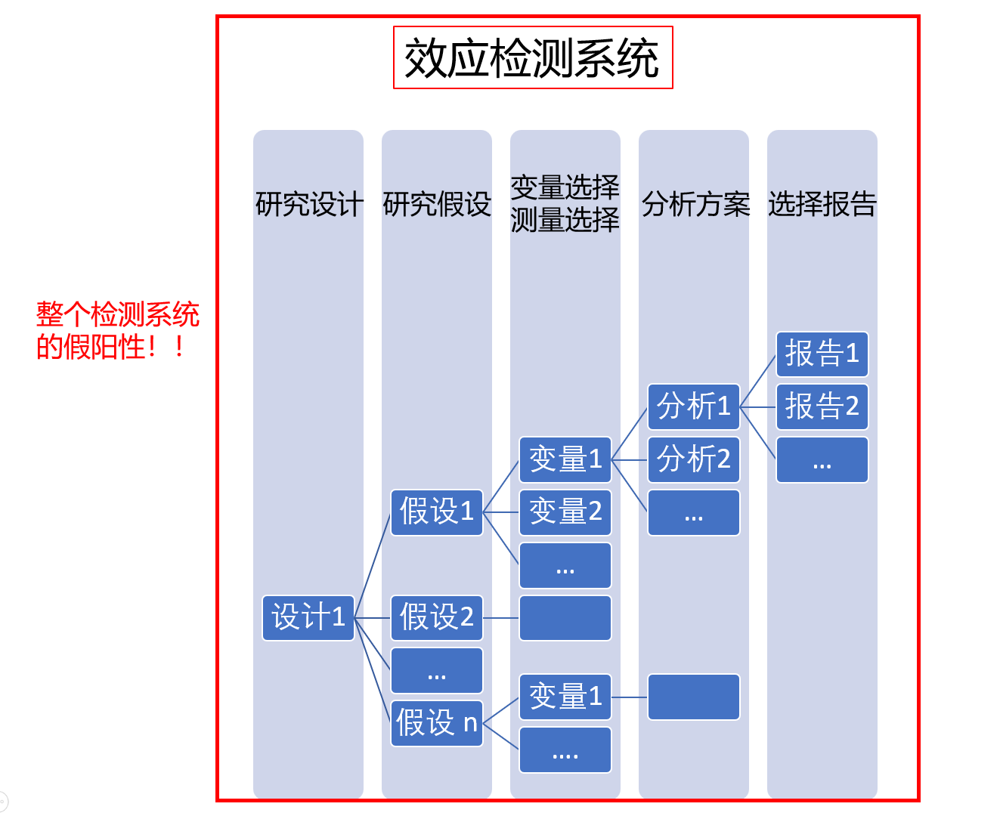
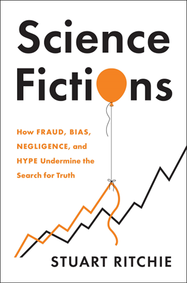
总结
为什么要学习/使用贝叶斯因子
贝叶斯因子是什么
常见BF分析：t-test, ANOVA, multinomial
贝叶斯分析的流程